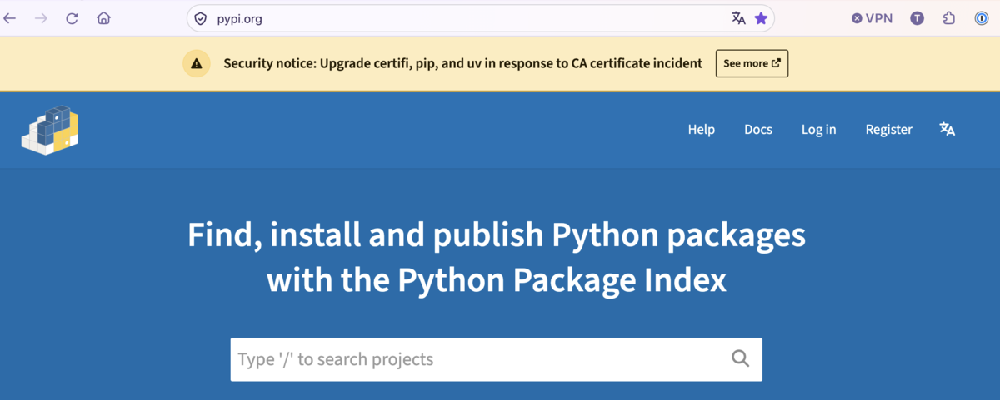
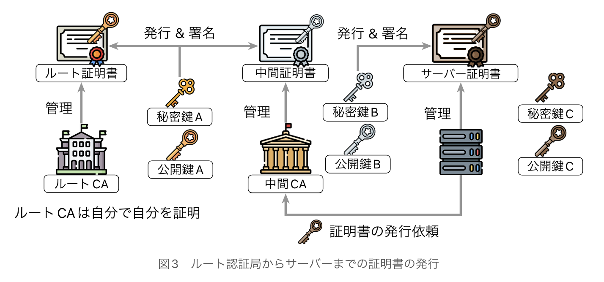

vs eMudhra🏐
- Event:
第1回 自由が丘.any
- Presented:
2026/11/11 nikkie
We have a problem here [2]
eMudhra [1] Intermediate CA Compromiseの対応について（Python使い視点）
https://emudhra.we-have-a-problem.com/ を賢いコーディングエージェントに解説してもらいましょう
ある日 PyPI [3] にて

noticeに沿ってバージョンアップ
Information for Python users regarding eMudhra / emSign CA certificate security incident
pip（パッケージマネージャ）を26.2.2へ
uv（Python&パッケージマネージャ）を0.13.4へ
何をしたんだろう？
TLS (HTTP S)に問題
eMudhraは中間認証局
eMudhraが管理する秘密鍵（8つ）が 公開鍵から容易に復元 できてしまった🙈 [4]
誰でもなりすませる！
証明書チェーン

証明書たち
サーバ証明書
中間証明書 （eMudhraはここ）
ルート証明書：OS、アプリ、ソフトウェアにバンドル（trust store）
ルート証明書のバンドル
certifi 2026.10.19で削除
pip 26.2.2はcertifi 2026.10.19を同梱
webpki-root-certs 1.0.10で削除
uvは0.13.4で更新
さらに、Python自体もCVE対応
Python 3.15.2, 3.14.10, 3.13.18, 3.12.16 and 3.11.18
gh-160040: Distrust compromised eMudhra intermediate CA keys (CVE-2026-115557)
検証時に問題の公開鍵を 拒否
標準ライブラリ ssl の証明書検証に拒否リストを追加
検証するチェーンに、問題の公開鍵を含む証明書があれば接続を拒否
macOS + uvで問題に気づいていたため大助かり
macOSとuvの組合せがピンチ（でした） [6]
uv (python-build-standalone)で入れたPythonは
/etc/ssl/cert.pemを参照問題の中間証明書につながるルート証明書が含まれていた
Appleの拒否情報がこの検証経路では適用されず
urllibで検証サイトに接続できてしまった
まとめ🌯 vs eMudhra🏐
eMudhraの秘密鍵の事故に対応する必要があります⏳
ルート証明書バンドルは削除したバージョンへ要更新
CVEとしてPython 3.15.2ではsslモジュールがブロックしたのでmacOS+uvでも安全に